| Split editors |
Do you ever find yourself working in a large file and need to view or edit multiple sections at once?
Finally, Eclipse supports split editors!
You can now split / unsplit the currently active editor. Just use one of the new key bindings supplied in Luna:
- Ctrl+_ splits the editor one above the other
- Ctrl+{ splits the editor side by side
- Re-applying the command to an already split editor reverts it to only have one pane.
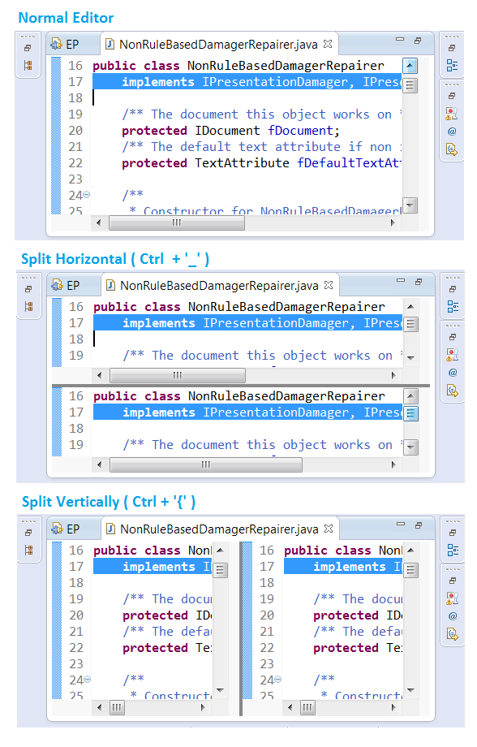
Try it out on your favorite editor!
|
| Dark theme |
A new dark window theme has been introduced. This popular community theme demonstrates the power of the underlying
Eclipse 4 styling engine. You can enable it from the General > Appearance preference page. Plug-ins can contribute
extensions to this theme to style their own specific views and editors to match the window theme.
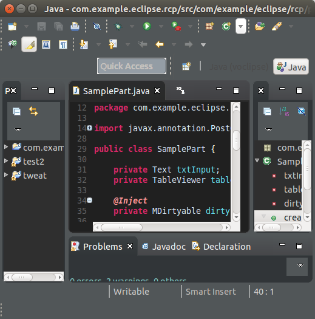
|
| Quick access as a popup |
If you find the Quick Access field in the toolbar takes up too much space, you can now hide it.
From the context menu in the toolbar, select Hide.

Once hidden, pressing Ctrl+3 will instead show a popup dialog.
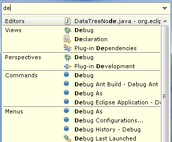
|
| New layout for minimized views |
Minimized views now have two different display modes:
- Use Overlays: This is the current mode where showing a minimized view
opens it in a 'fly out', overlaying part of the main window.
- Show in the Original Location: This is a new mode that will temporarily put the
stack back into the perspective while one of its views is active. This
has the advantage that the minimized view won't overlay anything in the
current presentation (e.g. your editor...).
To access the new mode, right-click on the Restore button
of a minimized stack and select the Show in the Original Location menu item (see image
below). Note that this change is global, so once it's set, all minimized
views will use the selected mode.
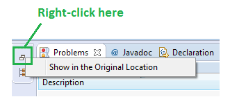
Here's what the current mode looks like:
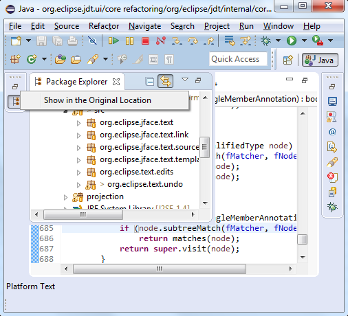
Here's what the new mode looks like. Note how the editor
has been pushed to the right rather than being obscured:
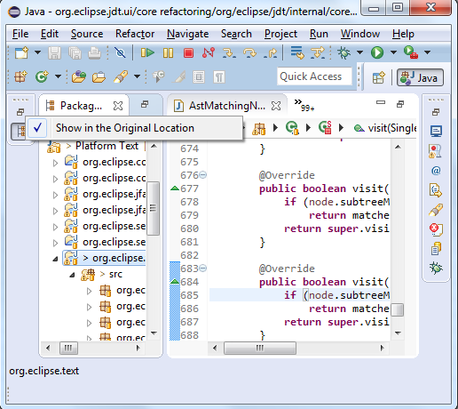
We're really interested in your feedback on this! The initial response
has been positive enough that we're considering making the non-overlay
mode the default. What do you think? (Post your comments here).
|
| Perspective re-ordering |
You can now drag and drop the items in the perspective switcher to change the order of your open perspectives.
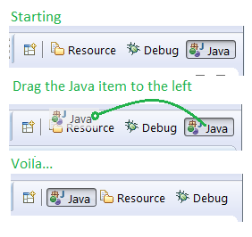
|
| New protection options for Eclipse |
A new launcher parameter named -protect has been introduced and it accepts the following values:
- -protect root can be used to prevent Eclipse from being started as a root user,
either directly or via programs that run with administrative privileges like 'sudo'.
This option is currently implemented only on Linux/UNIX based platforms.
- -protect master can be used to prevent starting of the master instance in a shared install configuration.
This option can be used on all platforms supported by Eclipse.
The above options can either be set in the launcher's .ini file or can be used directly from the command line (e.g eclipse -protect root).
|
| Signed SDK Executables (for Windows and Mac) |
We now provide signed Windows and Mac executables for the Eclipse SDK.
This gets rid of those operating system warnings about running untrusted software, and
saves you from having to disable "Gatekeeper" or other security measures to run Eclipse.
|
| Filter conflicting projects during import |
When importing existing projects, you can now filter out any
conflicting projects (projects that are already present in your workspace).
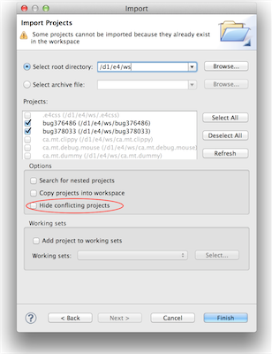
|
| Import as Project |
In the Project Explorer, a folder that contains a .project file and whose related project
isn't already in the workspace now shows an Import as Project context menu entry that imports the folder
into the workspace as an existing project.
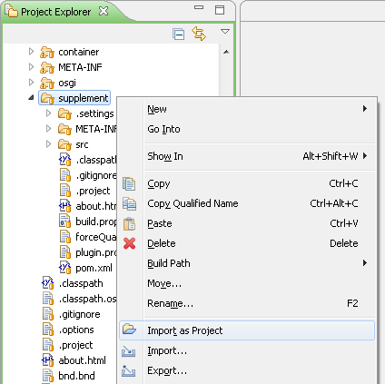
|
| Show In System Explorer |
If you select a resource and right click, there is now a Show In > System Explorer context menu entry
that will open the folder containing that resource in your system's file explorer.
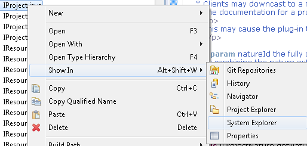
The command for launching the system explorer can be configured on the
General > Workspace
preference page.
|
| Updated launch options |
The default preference for the fall-back behavior of context-sensitive launching has been changed to launch the previous application.
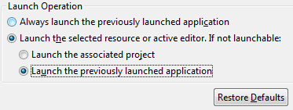
Existing workspaces that use the "Always launch the previously launched application" option are not affected by this change.
|
| Collapse All in Ant view |
The Ant view now supports the Collapse All command:
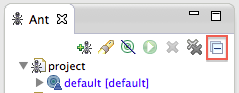
|
| Platform icons converted to png files |
Based on a community contribution, lots of of the existing GIF icons in the Eclipse platform have been replaced by PNG icons.
This makes Eclipse icons look better on a dark background, as for example the toolbar on Mac OS X or on a dark theme.
|
| Support for dynamic icon changes |
The workbench now supports dynamically changing icons at runtime. This means that workbench themes (such as the dark theme), can
introduce different icons, and these changes will take effect without requiring a restart.
|
| Ubuntu menu integration |
In cooperation with Canonical, the Eclipse Platform team has been working on improving the presentation of Eclipse menus in Ubuntu, which had
problems in Ubuntu 13.04 and 13.10. These problems are now resolved in Ubuntu 14.04, where Eclipse menus now display nicely.
|
| SWT Browser now supports XULRunner 24.x |
An SWT Browser created with style SWT.MOZILLA can now be used with the XULRunner 24.x runtime.
|
| Set the GTK+ version to be used by Eclipse via the launcher |
The launcher parameter --launcher.GTK_version can now be used to choose which version of GTK+ will be used by Eclipse on Linux.
The acceptable values are:
- 2 for GTK+ 2.x
- 3 for GTK+ 3.x
Note that setting the GTK+ version via this parameter takes precedence over setting the SWT_GTK3 environment variable.
See bug 434619 for more details.
|